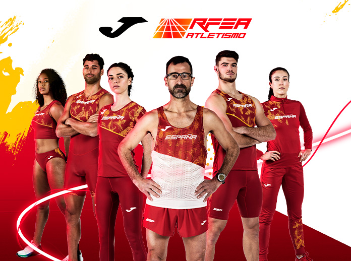
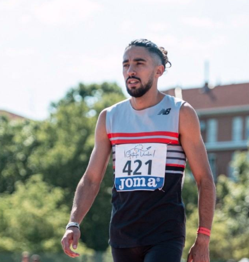
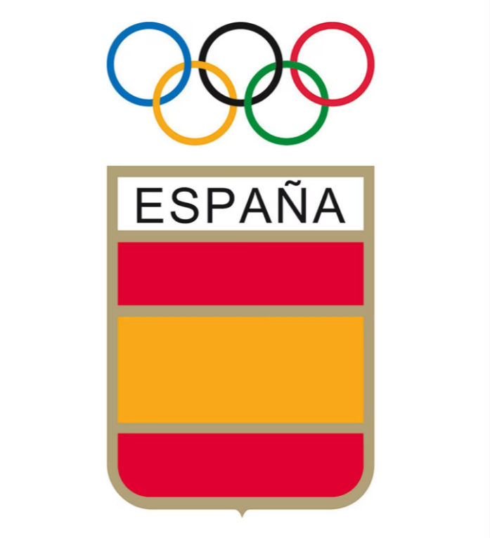
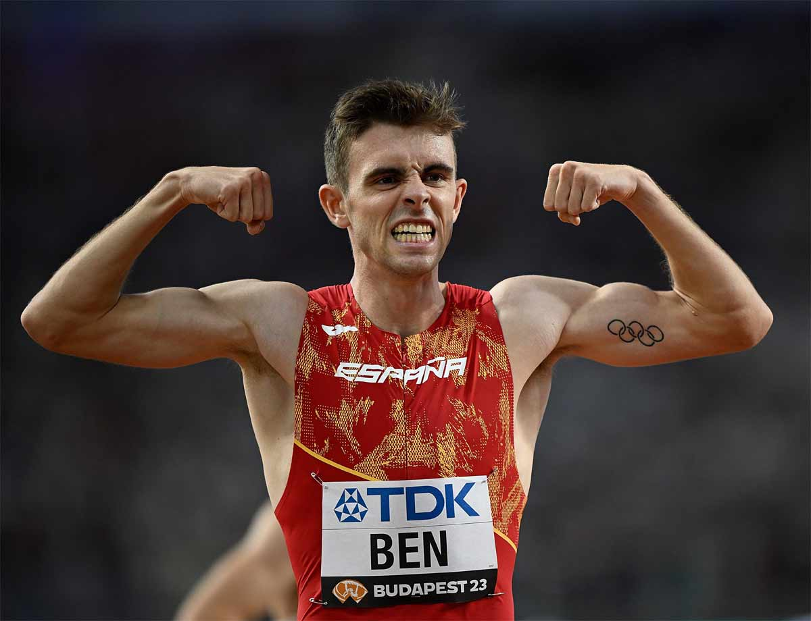

LA FEDERATION
La Fédération d'Athlétisme Espagnole (RFEA) incarne l'excellence
sportive en Espagne. En organisant des compétitions de haut
niveau, en développant de nouveaux talents et en représentant
fièrement le pays sur la scène internationale, la RFEA joue un rôle
essentiel dans la promotion de l'athlétisme. Grâce à son engagement
envers l'excellence athlétique et son soutien continu aux athlètes, la
RFEA continue de cultiver la passion pour le sport à travers le pays..
.
La RFEA a pour mission de développer, soutenir et promouvoir
l'athlétisme à tous les niveaux, en favorisant l'émergence de
nouveaux talents et en maintenant un haut niveau de performance
dans le sport. Nous nous engageons à offrir des opportunités
d'excellence aux athlètes, des programmes de formation de qualité
pour les entraîneurs, et à organiser des compétitions nationales et
internationales de premier plan
sportive en Espagne. En organisant des compétitions de haut
niveau, en développant de nouveaux talents et en représentant
fièrement le pays sur la scène internationale, la RFEA joue un rôle
essentiel dans la promotion de l'athlétisme. Grâce à son engagement
envers l'excellence athlétique et son soutien continu aux athlètes, la
RFEA continue de cultiver la passion pour le sport à travers le pays..
.
La RFEA a pour mission de développer, soutenir et promouvoir
l'athlétisme à tous les niveaux, en favorisant l'émergence de
nouveaux talents et en maintenant un haut niveau de performance
dans le sport. Nous nous engageons à offrir des opportunités
d'excellence aux athlètes, des programmes de formation de qualité
pour les entraîneurs, et à organiser des compétitions nationales et
internationales de premier plan
NOS
TETES D'AFFICHE

Saúl Ordóñez
LA FEDERATION ESPAGNOL
AUX JEUX OLYMPIQUE
Forte d'une histoire riche depuis 1900, la fédération espagnole a cumulé
312 médailles olympiques, notamment grâce à des athlètes renommés tels
que Pau Gasol, Mireia Belmonte et Rafael Nadal. Parmi ses exploits
marquants, on compte la victoire du football masculin en 1992 et la 2ème
place au classement général des médailles en 2004. Véritable pilier du
mouvement olympique, la fédération espagnole continue d'inspirer les
générations futures

Spécialisé dans la course de demi-fond, plus
précisément le 800 mètres, il a représenté l'Espagne
dans plusieurs compétitions internationales, notamment
aux championnats d'Europe d'athlétisme. Ordonez est
connu pour sa vitesse et sa stratégie de course tactique
sur la piste, ce qui lui a valu des performances
remarquables au cours de sa carrière sportive.
précisément le 800 mètres, il a représenté l'Espagne
dans plusieurs compétitions internationales, notamment
aux championnats d'Europe d'athlétisme. Ordonez est
connu pour sa vitesse et sa stratégie de course tactique
sur la piste, ce qui lui a valu des performances
remarquables au cours de sa carrière sportive.

Adrián Ben
Adrián Ben a rapidement fait sensation dans le monde du
demi-fond. Dès son plus jeune âge, il a enchaîné les victoires
et les records, démontrant un talent hors du commun et une
détermination sans faille
demi-fond. Dès son plus jeune âge, il a enchaîné les victoires
et les records, démontrant un talent hors du commun et une
détermination sans faille
LE PALMARÈS
AUX JEUX OLYMPIQUE
312 médailles olympiques, notamment grâce à des athlètes renommés tels
que Pau Gasol, Mireia Belmonte et Rafael Nadal. Parmi ses exploits
marquants, on compte la victoire du football masculin en 1992 et la 2ème
place au classement général des médailles en 2004. Véritable pilier du
mouvement olympique, la fédération espagnole continue d'inspirer les
générations futures